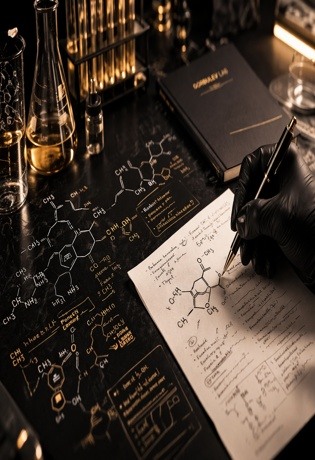
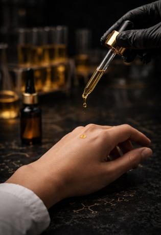
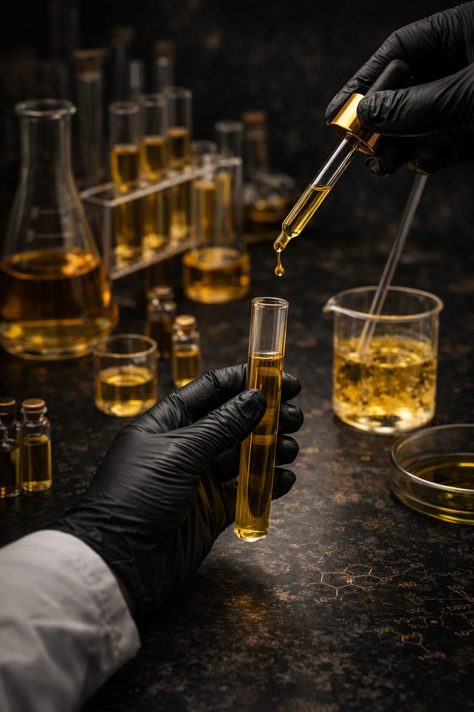
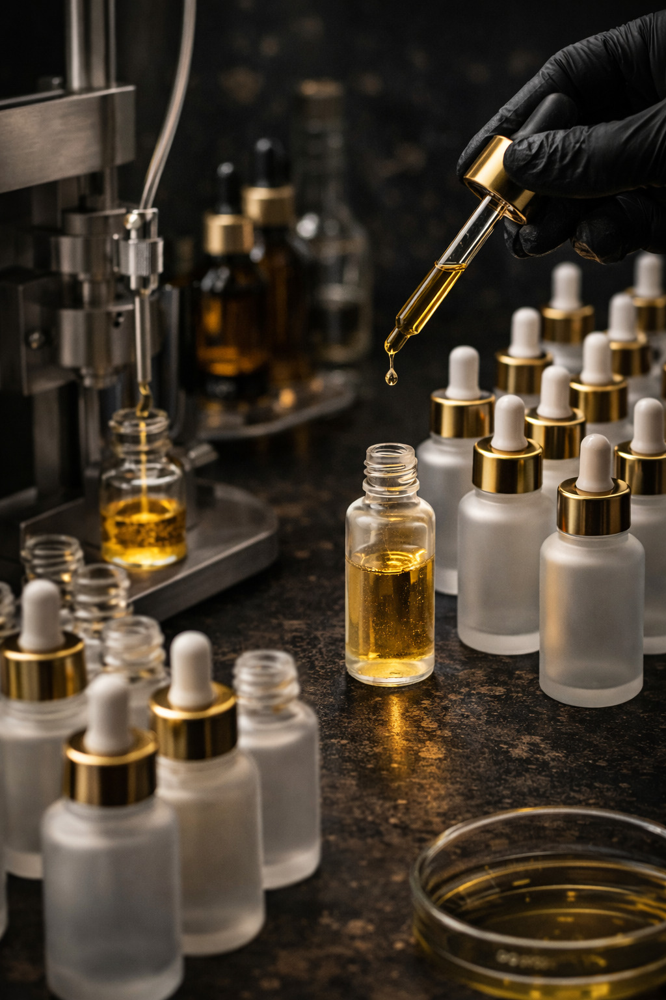

Продукты GorbulevLab
Разрабатываем и тестируем косметические продукты в различных направлениях — от профессиональных средств для ногтевого сервиса до уходовых формул для кожи, волос и тела.
Направления разработки
Профессиональные продукты
Формулы для работы мастеров и профессионального использования.
Уходовые решения
Продукты для ухода за кожей, волосами и телом.
Технические составы
Вспомогательные жидкости и рабочие решения для различных задач.
Текущие категории продуктов
Подготовка ногтей
- Обезжириватели
- Дегидраторы
- Праймеры
Рабочие жидкости
- Жидкости для снятия липкого слоя
- Средства 2 в 1
- Средства 3 в 1
- Жидкости для работы с материалами
- Очистка кистей
Снятие покрытий
- Жидкости для снятия гель-лака
- Жидкости для снятия лака
- Жидкости для снятия клея
Уход
- Сухие масла
- Питательные масла
- Ремуверы для кутикулы
- Крем для рук
- Крем для лица
- Спреи-подготовки
Подход к созданию продуктов
Каждый продукт проходит путь от подбора состава до тестирования и доработки.
Мы оцениваем не только формулу, но и её поведение в работе, стабильность и удобство применения.
Этапы разработки
Разработка
Подбор компонентов и формирование состава

Тестирование
Проверка в работе и оценка результата

Доработка
Улучшение формулы и корректировка состава

Подготовка
Финализация продукта перед запуском

Ассортимент лаборатории последовательно расширяется, включая новые категории и направления разработки.